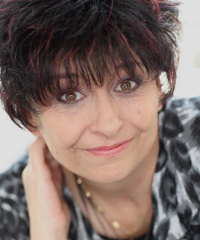

 Die Kreative Malerei war für mich schon seit frühester Kindheit ein fester Bestandteil meines Lebens. Es ist nicht nur ein Hobby, sondern auch Balsam für die Seele.
Im Laufe der Jahre habe ich mich immer weiterentwickelt. Von 2008-2009 absolvierte ich ein Studium an der Hamburger Akademie. Dadurch konnte ich noch einige Wissenslücken schließen und andere Maltechniken kennen lernen.
Die Vielseitigkeit der Thematiken und Maltechniken ist für mich wie ein kleines Abenteuer. Man fragt sich jedes mal "Wird es mir gelingen?". In den meisten Fällen wächst man über sich hinaus.
Ich wünsche allen viel Spaß bei einem kleinen Galerierundgang auf meiner Homepage.